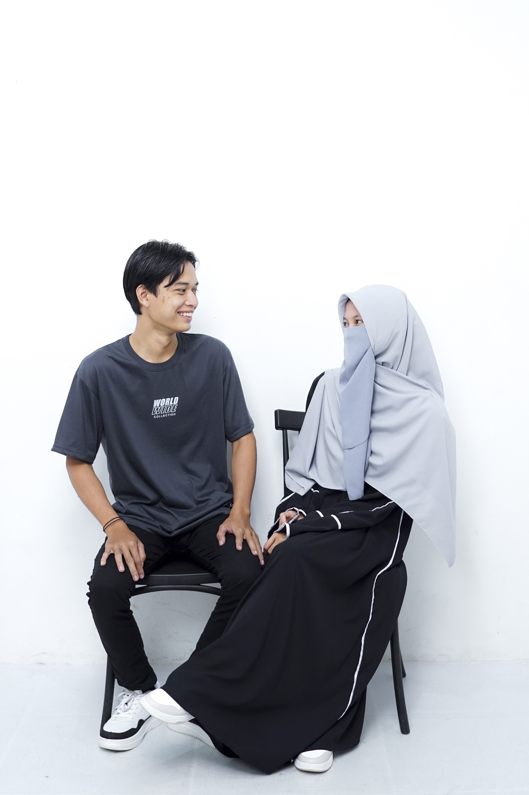

Pembuka
Maha Suci Allah SWT yang telah menciptakan makhluk-Nya berpasang-pasangan. Ya Allah, perkenankanlah kami untuk menikahkan putra-putri kami:

Pengantin Pria
Muhammad Daiwana
Pengantin Wanita
Sri Sukmawati
Acara Hajat — Utama
Assalamu’alaikum Wr. Wb.
Dengan ini kami bermaksud mengundang Bapak/Ibu/Saudara/i untuk menghadiri acara hajat kami yang akan diselenggarakan pada:
- Tanggal: Sabtu, 04 April 2026
- Waktu: Pukul 09.00 WIB s/d selesai
- Tempat: Kp. Panuusan RT 01 RW 02, Desa Malakasari, Kecamatan Baleendah (Kediaman Mempelai Pria)
Bertempat di alamat tersebut di atas. Merupakan suatu kehormatan bagi kami apabila Bapak/Ibu/Saudara/i berkenan hadir untuk memberikan doa restu kepada kedua mempelai.
Atas kehadiran dan doa restu Bapak/Ibu/Saudara/i, kami ucapkan terima kasih.
Wassalamu’alaikum Wr. Wb.
Akad Nikah
- Tanggal: Minggu, 12 April 2026
- Waktu: Pukul 09.00 WIB s/d selesai
- Tempat: Kp. Cigoong RT 01 RW 05, Desa Mekarsari, Kecamatan Cimaung (Kediaman Mempelai Wanita)
Kami Yang berbahagia.
Keluarga Besar Bpk. Dedi Hendriana & Ibu Rita Risanti
Keluarga Besar Bpk. Dadan Mulyana & Ibu Ambar Wati
Sri & Daiwana
Turut Mengundang :
- Keluarga Besar Abah Atam (Alm) & Ibu Eroh (Almh)
- Keluarga Besar Bpk. Okib (Alm) & Ibu Diah (Almh)
- Bpk. Dedi Suprianto
- Ibu Ai Rohaeti
- Ibu Eros Rosito
- Bpk. Tata Rusmana
- Ibu Ida Rosida
- Bpk. Uze (Adeta Furniture)
Penutup
Mohon maaf apabila ada kesalahan dalam penulisan nama & gelar.
Wassalamu’alaikum Wr. Wb.
Terima kasih atas perhatian dan doa restunya.